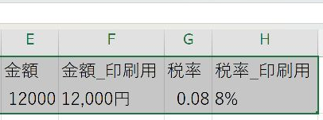

Word差し込み印刷で日付・金額・数値の表示崩れを直す方法
日付が「11/2/2026」に、税率が長い小数になるときの直し方です。Excelで「完成した文字列」の列を作ってWordに渡します。
結論
ExcelのTEXT関数で「12,000円」「8%」などの印刷用列を作り、Wordではその列を選びます。元の列は計算用に残します。
やさしい（Lv.2）
- 元データを確認
- 印刷用列を作る
- 列を選び直す
- 全員分で確認
目次
なぜ崩れるのか
Excelのセルに設定した見た目が、そのままWordへ渡るとは限りません。元の列を残し、TEXT関数で印刷用の列を作って、その列をWordへ挿入します。Wordのフィールドコードを編集せずに進められます。
手順1元データの形を確認する
- 金額は数値、請求日は日付値、8%の税率は0.08という数値が入っている例です。
- すでに「12,000円」などの文字列なら、その列を直接差し込む方法も使えます。
- 日付の計算・抽出には元の日付列を使います。TEXT関数の結果は表示用の文字列なので、元の列を置き換えません。
手順2印刷用の見出しと式を入力する
| 元の列 | 元の値 | 新しい列名 | 2行目に入れる式 | 印刷用の結果 |
|---|---|---|---|---|
| C列：請求日 | 2026/11/2 | 請求日_印刷用 | =IF(C2="","",TEXT(C2,"yyyy年m月d日")) | 2026年11月2日 |
| E列：金額 | 12000 | 金額_印刷用 | =IF(E2="","",TEXT(E2,"#,##0円")) | 12,000円 |
| G列：税率 | 0.08 | 税率_印刷用 | =IF(G2="","",TEXT(G2,"0%")) | 8% |
| I列：顧客番号 | 123 | 顧客番号_印刷用 | =IF(I2="","",TEXT(I2,"000000")) | 000123 |
- 表の右側に空いている列を用意し、1行目へ表の「新しい列名」を入力します。
- 同じ列の2行目へ式を入れます。式の中のC2・E2・G2・I2は、実際の元データのセルに合わせます。
- Enterを押して結果を見ます。式自体が表示される場合は、その列の表示形式を「標準」にしてからF2、Enterで確定し直します。
- セル右下の四角を最終行までドラッグし、全員分へ式をコピーします。
確認空欄が空欄のままで、先頭・途中・最後の結果が正しければ保存します。


手順3Wordで「印刷用」の列を選び直す
- Excelの表を保存し、修正するWordの差し込み用ひな形を開きます。すでに完成文書へ出力している場合も、元のひな形で選び直します。
- 「差し込み文書」→「宛先の選択」→「既存のリストを使用」を押し、保存したExcelファイルを選びます。
- 「テーブルの選択」で使うシート名を選びます。1行目が見出しなら「先頭行をタイトル行として使用する」をオンにして「OK」を押します。
- 「アドレス帳の編集」を開き、氏名・件数・空白の行がないことを確認して「OK」を押します。
- すでに元の「請求日」「金額」「税率」「顧客番号」を挿入してある場合は、差し替えるフィールドを選んで削除します。
- 同じ場所をクリックし、「差し込みフィールドの挿入」で「請求日_印刷用」「金額_印刷用」「税率_印刷用」「顧客番号_印刷用」から対応する列を選びます。
- 「結果のプレビュー」で値を切り替えます。Excelの式を変更した場合は保存後、Wordの宛先を選び直して最新の値を確認します。

手順4完成文書で確認する
- 「差し込み文書」→「完了と差し込み」→「個々のドキュメントの編集」を選びます。
- 「すべて」を選んで「OK」を押します。抽出している場合は、その時点の対象者全員が出力されます。
- 新しく開いた完成文書の先頭と最後を確認します。元のひな形とは別の文書です。
- 完成文書で「ファイル」→「印刷」を開き、用紙・向き・倍率・プリンターを確認して普通紙で試します。
- 位置と文字の欠けを確認してから本番用紙で印刷します。ひな形と完成文書は別の名前で保存します。

うまくいかないとき
| 症状 | 確認すること |
|---|---|
| 空欄の金額や番号が0や000000になる | 空欄を0としてTEXTへ渡していないか。空欄を残すIF付きの式を使います。 |
| 金額や番号が整わない | 元の値が数値か、すでに「12,000円」などの文字列かを確認します。完成済みの文字列は、その列を直接差し込めます。 |
| 日付が意図しない日になる | 元データが日付値かを確認します。曖昧な月日表記の文字列は、元資料を見て日付を確定します。 |
| Wordの列一覧に新しい列がない | Excelを保存したか、正しいファイル・シートにつないでいるかを確認します。 |
| 8%が800%になる | 元の値が0.08か8かを確認します。TEXTの0%は数値を100倍した表示にします。 |
参考
Microsoft：差し込み時の日付・数値の書式。接続方法によってExcelの表示書式が保持されない場合の説明です。
実機で確認した内容（2026年11月3日・Word／Excel 16.0）
表の式をExcelで実行しました。12000は12,000円、0.08は8%、123は000123、2026/11/2は2026年11月2日です。元の値が8の場合は800%になることも確認しました。